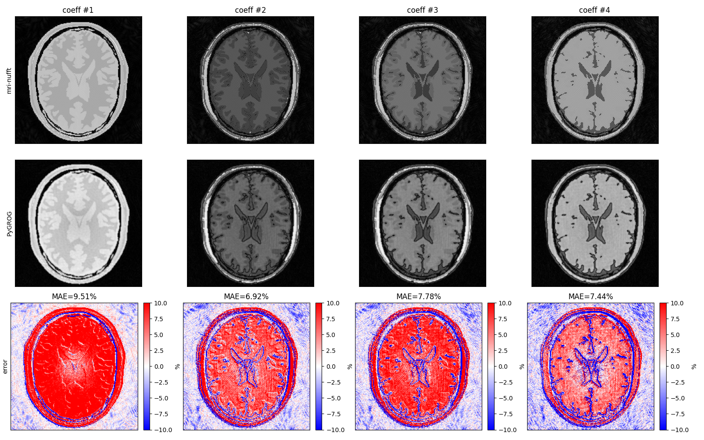
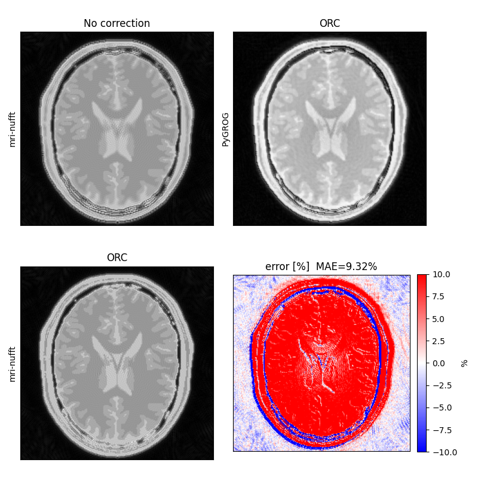

Note
Go to the end to download the full example code.
Gadgets with mri-nufft Data: Subspace and B0 ORC#
This example uses a common data pipeline for both PyGROG gadgets:
BrainWeb phantom from
brainweb-dl.Trajectory + k-space simulation + reference adjoint from
mri-nufft.GROG gridding to feed
SparseFFT.Comparison against mri-nufft reference formulations.
import matplotlib.pyplot as plt
import numpy as np
import torch
from mrinufft import display_2D_trajectory, get_operator, initialize_2D_spiral
from mrinufft.density import voronoi
from mrinufft.extras import fse_simulation, get_brainweb_map, make_b0map
from mrinufft.operators.off_resonance import MRIFourierCorrected
from mrinufft.trajectories.utils import Acquisition
from pygrog.calib import GrogInterpolator
from pygrog.gadgets import OffResonanceCorrection, SubspaceProjection, SubspaceSparseFFT
from pygrog.operator import SparseFFT
Gadget 1: SubspaceProjection / SubspaceSparseFFT#
m0, t1, t2 are already loaded in the shared setup above.
etl = 8
te = np.arange(etl, dtype=np.float32) * 8.0
tr = 3000.0
frames = fse_simulation(m0, t1, t2, te, tr).astype(np.float32)
frames = np.ascontiguousarray(frames) # (T, ny, nx)
# Simulate non-Cartesian k-space per frame using mri-nufft.
kspace_frames = np.stack(
[nufft_sim.op(frames[t].astype(np.complex64)) for t in range(etl)],
axis=0,
) # (T, n_coils, n_samples)
# mri-nufft adjoint reference per frame.
nufft_ref = get_operator("finufft")(
samples=samples,
shape=shape,
n_coils=n_coils,
smaps=smaps,
density=density,
squeeze_dims=True,
)
frames_ref = np.stack([nufft_ref.adj_op(kspace_frames[t]) for t in range(etl)], axis=0)
# Learn subspace basis from signal dictionary sampled from BrainWeb ranges.
def _estimate_basis(train_data, rank):
_, _, vh = np.linalg.svd(train_data, full_matrices=False)
return vh[:rank]
t1_vals = np.linspace(float(t1[t1 > 0].min()) + 1.0, float(t1.max()), 60)
t2_vals = np.linspace(float(t2[t2 > 0].min()) + 1.0, float(t2.max()), 60)
t1_grid, t2_grid = np.meshgrid(t1_vals, t2_vals)
train = fse_simulation(1.0, t1_grid.ravel(), t2_grid.ravel(), te, tr).astype(np.float32)
rank = 4
basis = _estimate_basis(train.T, rank)
# mri-nufft subspace reference: manual adjoint (∑_t conj(φ_r(t)) * NUFFT^H y_t)
# This avoids depending on MRISubspace's internal batching convention.
coeff_ref_nufft = np.stack(
[
sum(
np.conj(basis[r, t]) * nufft_ref.adj_op(kspace_frames[t])
for t in range(etl)
)
for r in range(rank)
],
axis=0,
)
# PyGROG subspace path: non-Cartesian -> sparse Cartesian -> SparseFFT + subspace.
# Pre-multiply by plan.pre_weights once here (caller's responsibility) so the
# orthonormality condition holds inside SubspaceSparseFFT.
sqrt_w = grog.plan.pre_weights
kspace_sparse = []
for t in range(etl):
kspace_t = (
kspace_frames[t].astype(np.complex64).reshape(n_coils, *samples.shape[:2])
)
sparse_t = torch.as_tensor(np.asarray(grog.interpolate(kspace_t, ret_image=False)))
kspace_sparse.append(sparse_t * sqrt_w.to(sparse_t.dtype).unsqueeze(0))
kspace_sparse = torch.stack(kspace_sparse, dim=0) # (T, n_coils, n_samples)
proj = SubspaceProjection(n_components=rank)
proj.fit(torch.as_tensor(train, dtype=torch.float32))
sub_op = SubspaceSparseFFT(base_op, proj.basis.to(torch.complex64))
coeff_pygrog = sub_op.forward(kspace_sparse).detach().cpu().numpy()
# Display all coefficients: rows = mri-nufft / PyGROG / error, cols = coefficients
fig, axes = plt.subplots(3, rank, figsize=(4 * rank, 10))
for r in range(rank):
c_ref = np.abs(coeff_ref_nufft[r])
c_ref /= c_ref.max() + 1e-12
c_grog = np.abs(coeff_pygrog[r])
c_grog /= c_grog.max() + 1e-12
axes[0, r].imshow(c_ref, cmap="gray", origin="lower")
axes[0, r].set_xticks([])
axes[0, r].set_yticks([])
axes[0, r].set_title(f"coeff #{r + 1}")
axes[1, r].imshow(c_grog, cmap="gray", origin="lower")
axes[1, r].set_xticks([])
axes[1, r].set_yticks([])
err = 100.0 * (c_grog - c_ref) / (c_ref.max() + 1e-12)
im = axes[2, r].imshow(err, cmap="bwr", origin="lower", vmin=-10, vmax=10)
axes[2, r].set_xticks([])
axes[2, r].set_yticks([])
axes[2, r].set_title(f"MAE={np.abs(err).mean():.2f}%")
fig.colorbar(im, ax=axes[2, r], fraction=0.046, pad=0.04, label="%")
axes[0, 0].set_ylabel("mri-nufft")
axes[1, 0].set_ylabel("PyGROG")
axes[2, 0].set_ylabel("error")
plt.tight_layout()
plt.show()

/home/mcencini/.conda/envs/pygrog/lib/python3.13/site-packages/mrinufft/_utils.py:67: UserWarning: Samples will be rescaled to [-pi, pi), assuming they were in [-0.5, 0.5)
warnings.warn(
Gadget 2: OffResonanceCorrection#
brain_mask = image > 0.1 * image.max()
b0_map, _ = make_b0map(shape, b0range=(-120, 120), mask=brain_mask)
readout_time = (
np.arange(samples.shape[1], dtype=np.float32) * Acquisition.default.raster_time
)
readout_time = np.repeat(readout_time[None, :], samples.shape[0], axis=0)
# Single-coil operator for ORC (no smaps needed)
nufft_orc = get_operator("finufft")(
samples=samples,
shape=shape,
density=density,
squeeze_dims=True,
)
orc_nufft = MRIFourierCorrected(
nufft_ref,
b0_map=b0_map,
readout_time=readout_time,
mask=brain_mask,
)
kspace_off = orc_nufft.op(image.astype(np.complex64))
image_no_orc = np.squeeze(np.abs(nufft_ref.adj_op(kspace_off)))
image_ref_orc = np.squeeze(np.abs(orc_nufft.adj_op(kspace_off)))
# PyGROG ORC: sparse interpolation, then apply ORC-corrected SparseFFT.
# OffResonanceCorrection.adjoint expects (n_coils, n_samples) -> (n_coils, *image)
# so we use a no-smaps operator and combine coils manually afterwards.
base_op_orc = SparseFFT(plan=grog.plan) # no smaps
sparse_off = torch.as_tensor(
np.asarray(
grog.interpolate(
kspace_off.astype(np.complex64).reshape(n_coils, *samples.shape[:2]),
ret_image=False,
)
),
dtype=torch.complex64,
)
# Pre-multiply by plan.pre_weights (caller's responsibility before ORC adjoint).
sparse_off = sparse_off * sqrt_w.to(sparse_off.dtype).unsqueeze(0)
# Derive per-sparse-sample readout times: each original non-Cartesian sample
# maps to up to kw Cartesian neighbours, so expand readout_time accordingly
# and filter to the valid (non-sentinel) neighbour entries that match
# what grog.interpolate() returns.
_kw = grog.plan.target_idx.shape[-1]
_valid_np = grog.plan.valid_mask.numpy()
readout_time_sparse = np.repeat(readout_time.ravel(), _kw)[_valid_np].astype(np.float32)
orc_pygrog = OffResonanceCorrection(
base_op_orc,
field_map=b0_map.astype(np.float32),
readout_time=readout_time_sparse,
mask=brain_mask,
n_components=8,
method="svd",
)
# Adjoint returns (n_coils, *image_shape) — combine with smaps
smaps_t = torch.as_tensor(smaps)
result_orc = orc_pygrog.adjoint(sparse_off) # (n_coils, *image_shape)
image_pygrog_orc = np.abs((result_orc * smaps_t.conj()).sum(0).detach().cpu().numpy())
image_no_orc /= image_no_orc.max() + 1e-12
image_ref_orc /= image_ref_orc.max() + 1e-12
image_pygrog_orc /= image_pygrog_orc.max() + 1e-12
err_orc = 100.0 * (image_pygrog_orc - image_ref_orc) / (image_ref_orc.max() + 1e-12)
err_orc_mae = np.abs(err_orc).mean()
# Layout: col 0 = mri-nufft w/o and with ORC; col 1 = PyGROG ORC and error
fig, axes = plt.subplots(2, 2, figsize=(8, 8))
axes[0, 0].imshow(image_no_orc, cmap="gray", origin="lower")
axes[0, 0].set_xticks([])
axes[0, 0].set_yticks([])
axes[0, 0].set_title("No correction")
axes[0, 0].set_ylabel("mri-nufft")
axes[1, 0].imshow(image_ref_orc, cmap="gray", origin="lower")
axes[1, 0].set_xticks([])
axes[1, 0].set_yticks([])
axes[1, 0].set_title("ORC")
axes[1, 0].set_ylabel("mri-nufft")
axes[0, 1].imshow(image_pygrog_orc, cmap="gray", origin="lower")
axes[0, 1].set_xticks([])
axes[0, 1].set_yticks([])
axes[0, 1].set_title("ORC")
axes[0, 1].set_ylabel("PyGROG")
err_im = axes[1, 1].imshow(
err_orc,
cmap="bwr",
origin="lower",
vmin=-10,
vmax=10,
)
axes[1, 1].set_xticks([])
axes[1, 1].set_yticks([])
axes[1, 1].set_title(f"error [%] MAE={err_orc_mae:.2f}%")
fig.colorbar(err_im, ax=axes[1, 1], fraction=0.046, pad=0.04, label="%")
plt.tight_layout()
plt.show()

/home/mcencini/.conda/envs/pygrog/lib/python3.13/site-packages/mrinufft/_utils.py:67: UserWarning: Samples will be rescaled to [-pi, pi), assuming they were in [-0.5, 0.5)
warnings.warn(
/home/mcencini/.conda/envs/pygrog/lib/python3.13/site-packages/mrinufft/_array_compat.py:122: UserWarning: The input is CPU array but not C-contiguous.
warnings.warn("The input is CPU array but not C-contiguous. ")
Total running time of the script: (0 minutes 35.297 seconds)